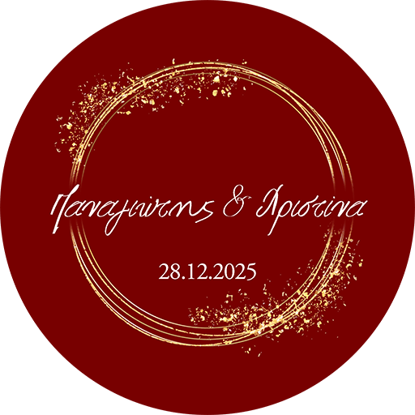

WEBDEVELOPER
I am Christina, a creative electrical and computer engineer with a passion for creating beautiful websites.
VIEW MY WORK


This is one of the biggest project I worked in. The basic website has various forms such us membership, volunteer, donor forms with payment through them. In addition, I was in constant communication with the client because I was responsible for the implementation of all the interactive games being included in this project until June 2025.
SEE THIS PROJECT
In this project I had to rebuild this website from a classic, quite old site to a more modern version. We collaborated with a client and combined our ideas, with the site becoming eventually more user-friendly, information more easily accessible with new pages, and on top of these it became more attractive as well as the code became easier to read.
SEE THIS PROJECT
Designed and implemented the basic site. Besides this, I built an administrator's area for employees where every employee can see the appointments assigned to them. Each manager had an extra option, where they could assign all booked appointments to their employees.
SEE THIS PROJECT
In this project I had to closely collaborate with a graphic design. The required result was the transformation of all created images in an one page website.
SEE THIS PROJECT
This was WordPress website, converted in HTML. Τhe site was redesigned and presented in a more attractive and modern way. Because this particular site had a lot of content, the challenge that had to be addressed was the conversion of WordPress to PHP, as well as transferring the content and images to the correct paths so usability would remain the same.
SEE THIS PROJECT
This is a website that I designed and implemented following the customer's instructions. In this project, there are seminars that are held on specific days, as presented in the calendar, with a maximum capacity. Thus, people who want to participate in a seminar have to fill in a form, and when the maximum number of people is reached, the form closes.
SEE THIS PROJECT©2025 Christina Stylianou

 Christina Stylanou
Christina Stylanou xristinastyl@gmail.com
xristinastyl@gmail.com Eindhoven, The Netherlands
Eindhoven, The Netherlands